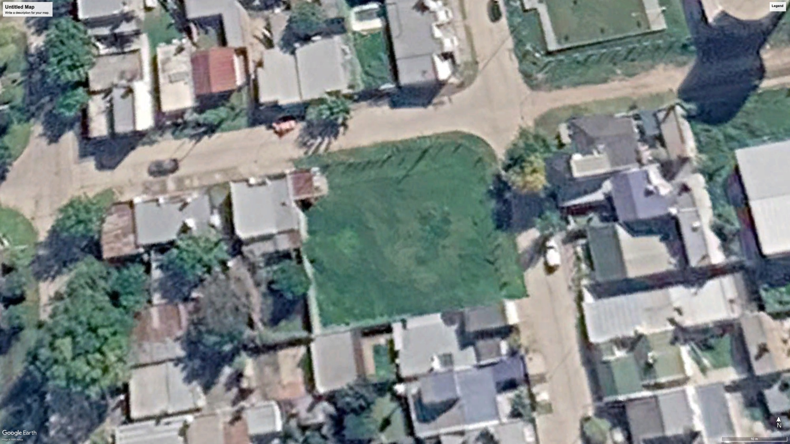
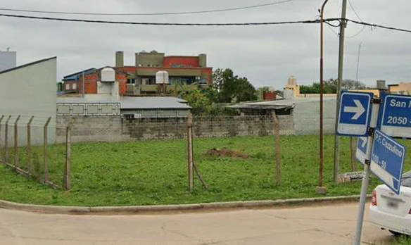

Vivienda con local
- Programa
- Vivienda unifamiliar y local de ropa
- Terreno
- Lote en esquina
- Superficie
- 147 m² útiles
- Año
- 2026
- Modelo
- Revit
- Cátedra
- Representación Arquitectónica, Nuñez. UNDAV
Concepción del Uruguay
Entre Ríos

San Martín P. F. Cazzulino Ing. Diez Figueras
- Manzanas regulares y construcciones predominantemente bajas.
- Se observan césped, cerco liviano, muros linderos y tendido aéreo.
- Cerca se identifica el Cementerio Municipal, un recinto arbolado.
Condiciones climáticas
- Enero, máxima media
- 31 °C
- Julio, mínima media
- 8 °C
Veranos cálidos y húmedos; inviernos frescos y con menos lluvia.
| Mes | Máxima, °C | Mínima, °C | Lluvia, mm | Nublado, % |
|---|---|---|---|---|
| Enero | 31 | 20 | 112 | 30 |
| Febrero | 30 | 19 | 136 | 31 |
| Marzo | 28 | 18 | 125 | 30 |
| Abril | 24 | 14 | 129 | 36 |
| Mayo | 20 | 11 | 85 | 46 |
| Junio | 17 | 8 | 59 | 50 |
| Julio | 17 | 8 | 52 | 46 |
| Agosto | 19 | 9 | 58 | 44 |
| Septiembre | 21 | 11 | 79 | 39 |
| Octubre | 24 | 14 | 107 | 35 |
| Noviembre | 27 | 16 | 118 | 32 |
| Diciembre | 30 | 18 | 113 | 30 |
Mayor confort exterior: mediados de febrero a fines de abril y principios de octubre a fines de diciembre.
01
Esquina y dos usos
Casa por San Martín y comercio por Cazzulino. Los accesos diferenciados y el retiro ordenan la relación entre calle, actividad comercial y vida doméstica.
02
Patio y sombra
El patio y la galería conectan los volúmenes. Pérgola, balcón y árboles ofrecen protección posible; comprobar la sombra de la vivienda sobre el jardín.
Verano: sol alto; favorecer la sombra. Invierno: sol bajo; captar sol desde el norte.
03
Luz y ventilación
La doble altura vincula el área social con el entrepiso. Estudia ventilación cruzada y salida de aire caliente por ventanas altas que pueden abrirse.
Las ventanas altas iluminan el área social. Aperturas bajas y altas para evacuar calor en verano.
Planilla de locales
| Planta baja | m² |
|---|---|
| Comedor | 32,28 |
| Sala de estar | 29,88 |
| Local de ropa | 25,56 |
| Cocina | 14,05 |
| Lavadero | 4,47 |
| Baño | 3,08 |
| Subtotal | 109,31 |
| Planta alta | m² |
|---|---|
| Habitación | 30,26 |
| Vestidor | 3,99 |
| Baño | 3,92 |
| Subtotal | 38,17 |
| Total | 147,48 |